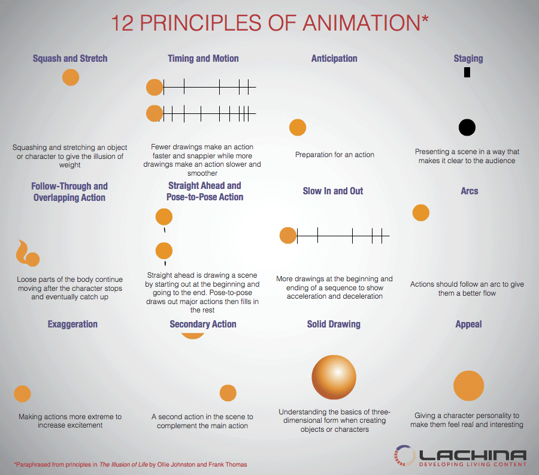
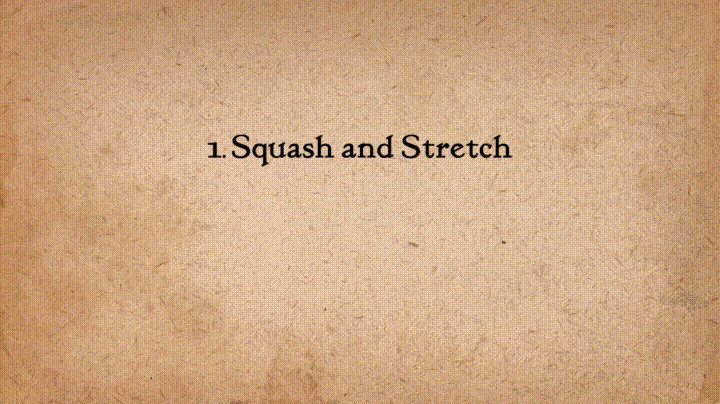
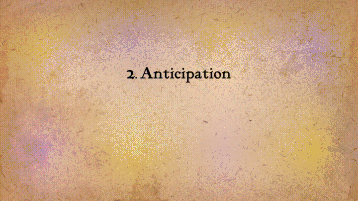
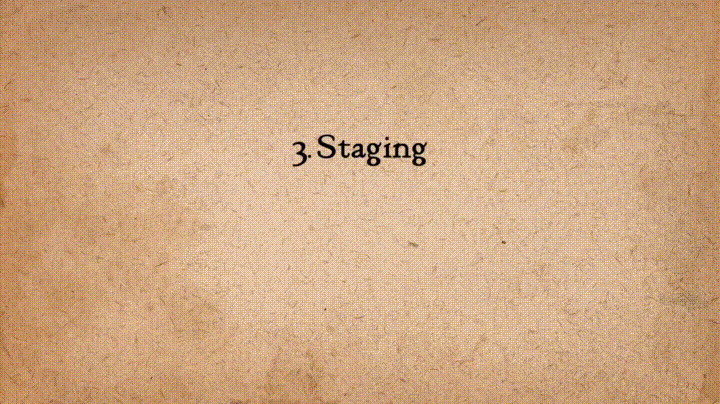
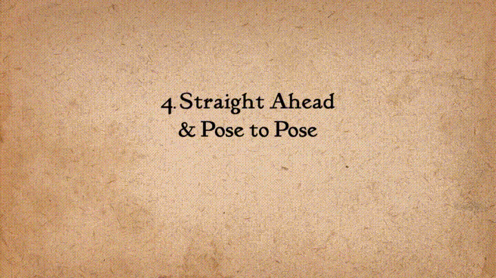
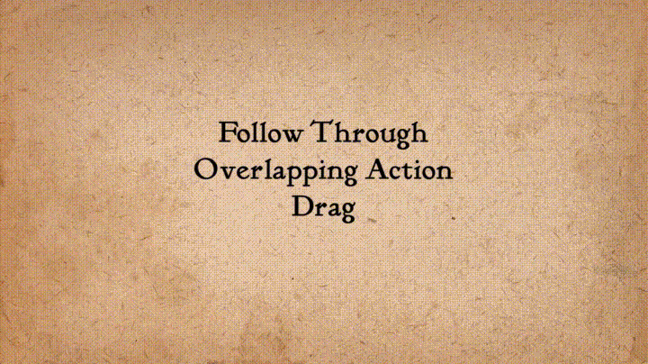
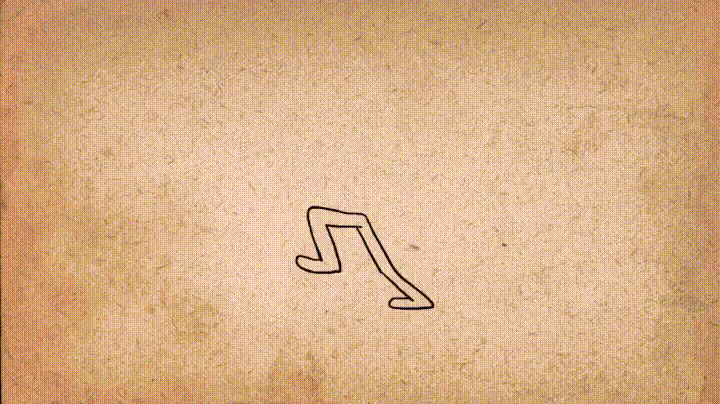
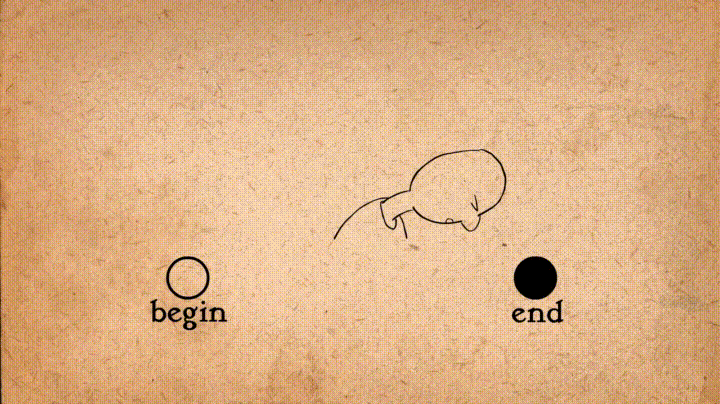
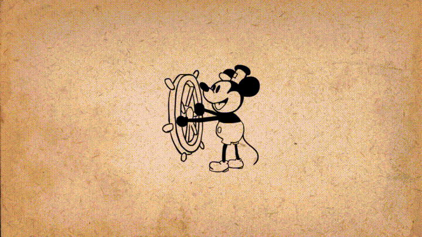

Принципы анимации
12 принципов анимации — набор основных принципов анимации, предложенных аниматорами студии Дисней Олли Джонстоном
и Фрэнком Томасом в их совместной работе «Иллюзия жизни: анимация Диснея». Данные принципы основаны на многолетнем
опыте работы аниматоров студии Уолта Диснея, которые, начиная с 1930 года, разрабатывали методы для получения более выразительной анимации.
Основной идеей принципов является создание иллюзии соблюдения основных законов физики, однако они рассматривают и более абстрактные вопросы,
такие как эмоциональность и привлекательность персонажей. Хотя первоначально принципы предназначались для традиционной,
рисованной анимации, они вполне актуальны и для компьютерной анимации.

12 принципов анимации
Сжатие и растяжение
Сжатие и растяжение — важнейший принцип, его задачей является создание иллюзии веса и эластичности формы анимируемых объектов. Он может быть применён как к простым объектам, так и к более сложным конструкциям, например мускулатуре человеческого лица. Взятая в крайней точке, сжатая и растянутая в преувеличенной степени фигура может дать выразительный комический эффект. В реалистичной анимации, однако, наиболее важным аспектом этого принципа является то, что объём объекта не изменится, если меняется его форма. Если длина мяча растянута по вертикали, то ширина (и глубина в трёхмерном изображении) должна соответствующе сокращаться горизонтально.

Подготовка, или упреждение
Подготовительное действие способствует восприятию движения как более реалистического, так как визуализирует предваряющую его фазу: танцор перед прыжком сгибает колени; игрок в гольф перед ударом делает замах клюшкой, футбольный судья перед свистком набирает в грудь воздух. Этот метод может наполняться не только физическим содержанием: например, взгляд персонажа за пределы экрана может свидетельствовать о том, что ожидается чье-то появление; фокусировка на объекте может говорить о том, что собирается его взять. Особый эффект неожиданности возникает, если упреждающее действие отсутствует. В результате зритель получает ощущение разрядки напряжения, что может добавить в действие комедийный момент. Этот эффект часто обозначается «шутка-сюрприз».

Сценичность
Этот принцип сродни постановке в театре или кино. Его целью является привлечение внимания публики и пояснение, что имеет самое большее значение в сцене, что происходит, и что должно произойти. Джонстон и Томас определили его как «абсолютно ясную и безошибочную подачу мысли», независимо от того, заключается ли мысль в действии, личности, выражении или настроении. Такая ясность может быть достигнута различными средствами, такими как размещение символов в кадре, использование света и тени, угол и положение камеры. Суть этого принципа заключается в поддержании внимания на том, что важно, и избегании излишней детализации.

Использование компоновок и прямого фазованного движения
Это два различных подхода к процессу рисования. Первые аниматоры просто фазовали движение «прямо вперёд» начиная с первого движения персонажа в сцене, последовательно делая рисунок за рисунком, что-то придумывая по мере продвижения. Второй подход — использование компоновок: сначала создаются ключевые кадры, а затем заполняются интервалы между ними. Прямая фазовка создаёт более плавную, динамическую иллюзию движения, и лучше подходит для анимации огня, воды и текучих предметов. С другой стороны этим методом трудно сохранять пропорции, а также создавать точные, убедительные позы. Использование компоновок работает лучше для драматических или эмоциональных сцен, где композиция и отношение к окружающей среде имеет большее значение. Часто эти методы комбинируются.

Сквозное движение и захлест действия
Эти тесно связанные техники помогают сделать движение более реалистичным, и создают впечатление, что персонажи подчиняются законам физики. «Сквозное движение» означает, что отдельные части тела будут продолжать движение после того, как персонаж остановился. «Захлест действия» показывает тенденцию частей тела двигаться с различной скоростью. Третьей техникой является «перетаскивание», где при начале движения персонажа некоторые его части движутся чуть медленнее и как бы «догоняют» его. Опять же, преувеличенное использование техники может произвести комический эффект, а более реалистичная анимация должна рассчитывать время точно для получения убедительного результата.

Смягчение начала и завершения движения
Движениям человеческого тела и большинству других объектов нужно время, чтобы ускориться и замедлиться. По этой причине, анимация выглядит более реалистичной, если содержит больше рисунков в начале и конце действия, подчёркивающих крайние позы, и меньше в середине. Этот принцип касается как перемещения персонажей между крайними позами, такими как сидение и стояние, так и к движению неодушевлённых предметов.
Дуги
Наиболее естественные движения имеют тенденцию следовать дуговой траектории, и анимация должна придерживаться этого принципа. Это может относиться к конечности, перемещаемой поворотом сустава, или брошенному объекту, движущемуся по параболической траектории. Исключением являются механические движения, обычно следующие по прямой. Чем больше скорость или импульс предмета, тем более пологая получается дуга. В бейсболе удачно поданный мяч будет двигаться по более прямой траектории, чем слабый; хорошо разогнавшийся фигурист не способен на такие крутые повороты, как фигурист медленный.
Дополнительное действие
Добавление вторичных действий к основному действию придаёт сцене больше жизни, и может помочь поддержать основные действия. Идущий человек одновременно покачивает руками или держит их в карманах, он может говорить или свистеть, или выражать эмоции с помощью мимики. Важным моментом во вторичных действиях является то, что они подчеркивают, а не отвлекают внимание от основного действия. В противном случае эти действия лучше опустить. В случае с мимикой, во время резкого движения они скорее всего будут оставаться незамеченными. В таких случаях лучше включать их в начале и в конце движения, а не во время.

Расчёт времени
Расчёт времени относится к числу рисунков или кадров для каждого действия, что влияет на скорость их подачи на плёнку. На чисто физическом уровне, правильный расчёт времени делает объекты более реалистичными. Например, вес объекта решает, как он реагирует на импульс или толчок. Расчёт времени имеет решающее значение для создания настроения персонажа, эмоции и реакции. Он также может быть средством донесения аспектов характера героя.

Преувеличение, утрирование
Преувеличение особенно полезно для анимации, так как идеальная имитация реальности может выглядеть статической и скучной в мультфильмах. Уровень преувеличения зависит от того, стремится ли художник выразить реализм или определённый стиль. Классическое понимание утрирования, принятое в «Диснее», подразумевало оставаться верным действительности, но преподносить её в более дикой, экстремальной форме. Другие формы преувеличения могут включать в себя сверхъестественные или сюрреалистические изменения в физических особенностях персонажа, или даже сюжете. Важно использовать определённый уровень ограничения при использовании утрирования; если сцена содержит несколько преувеличений, необходимо сохранять баланс между тем, как эти части соотносятся друг с другом, избегать смущения и путаницы на экране.

«Цельный» рисунок
Принцип цельности означает, что объект изображается с учётом его формы в трёхмерном пространстве и веса. Аниматор должен быть квалифицированным художником и понимать основы трёхмерного моделирования, анатомии, веса, баланса света и тени и т. д. Для классического аниматора это включает посещения художественных классов и зарисовки из реальной жизни. Одна вещь, о которой предостерегают Джонстон и Томас, это создание «близнецов» — персонажей, чьи левая и правая сторона выглядят зеркально правильными отражениями друг друга, выглядящих безжизненно. Современные аниматоры рисуют гораздо меньше, благодаря использованию компьютерных технологий, но их работа требует наличия общих представлений о классическом рисунке в дополнение к знаниям компьютерной анимации.